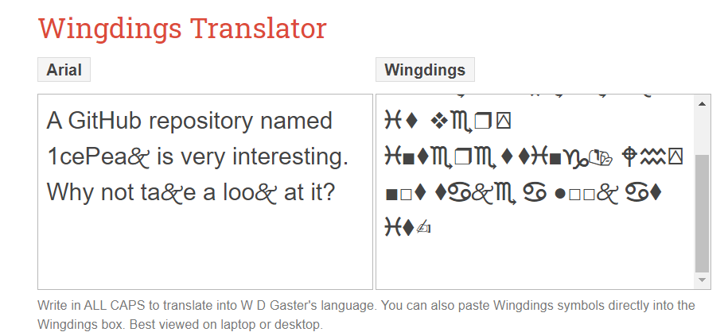
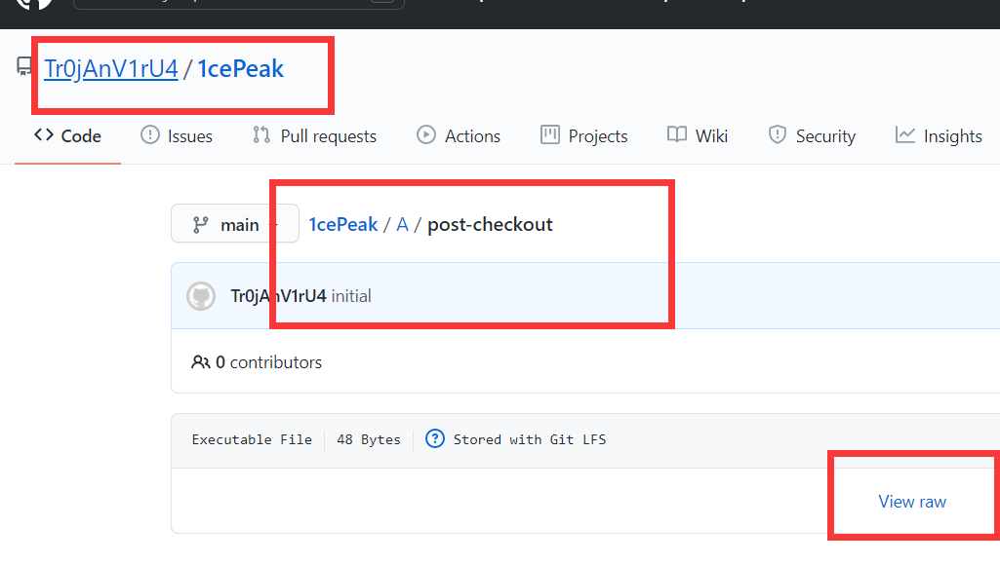
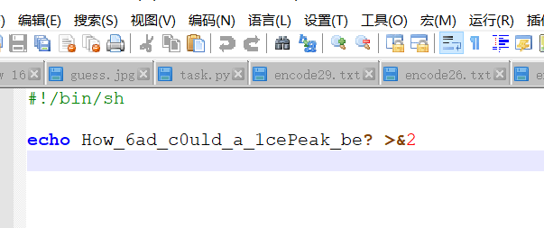
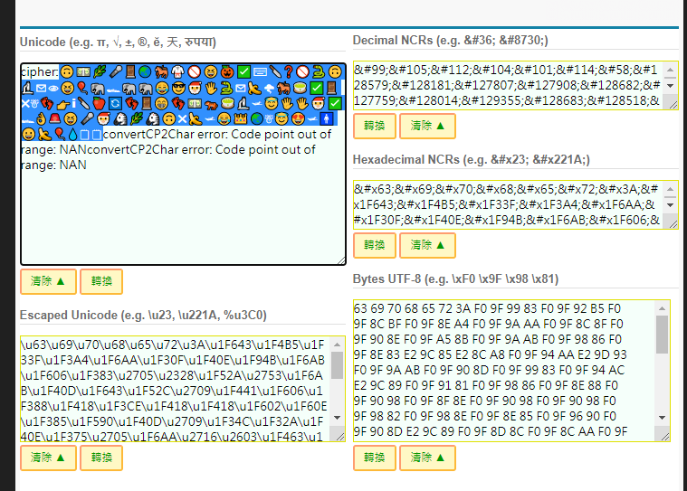
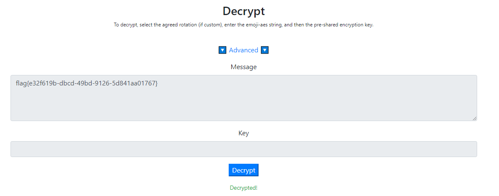

2021第五届蓝帽杯初赛
2021第五届蓝帽杯初赛
冬奥会_is_coming
mp3考虑mp3stego，这一步的密钥是冬奥会开始日期（八位数字）
用python,print出来后
✌︎ ☝︎♓︎⧫︎☟︎◆︎♌︎ ❒︎♏︎◻︎□︎⬧︎♓︎⧫︎□︎❒︎⍓︎ ■︎♋︎❍︎♏︎♎︎ 📂︎♍︎♏︎🏱︎♏︎♋︎🙵 ♓︎⬧︎ ❖︎♏︎❒︎⍓︎ ♓︎■︎⧫︎♏︎❒︎♏︎⬧︎⧫︎♓︎■︎♑︎📬︎ 🕈︎♒︎⍓︎ ■︎□︎⧫︎ ⧫︎♋︎🙵♏︎ ♋︎ ●︎□︎□︎🙵 ♋︎⧫︎ ♓︎⧫︎✍︎ |
找到网站https://wingdingstranslator.com/

找到对应的github

用notepad++打开

发现密钥mp3
发现cipher字样：https://www.ifreesite.com/unicode/
得到表情

参考这篇博客
https://miaotony.xyz/2021/02/11/CTF_2021NewsCTF/
得到带密钥的emoji表情解密网站
https://emoji-aes.miaotony.xyz/
得到flag
